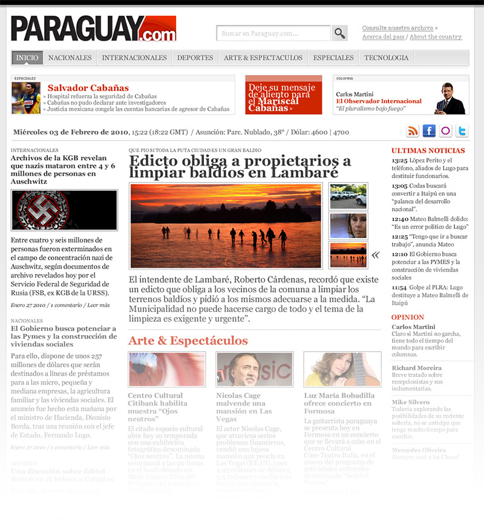
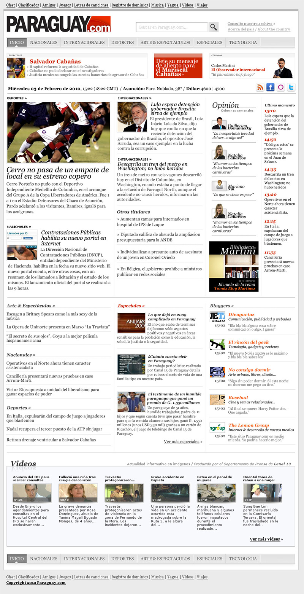
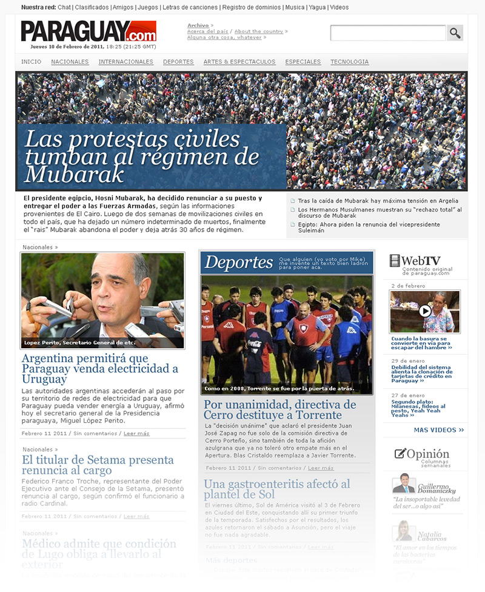
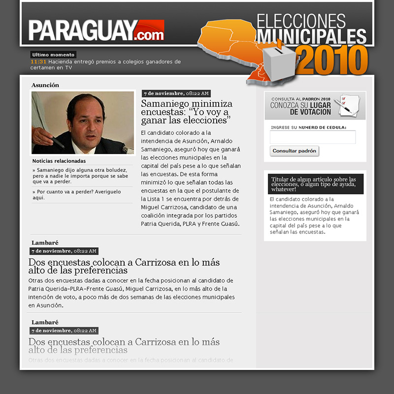
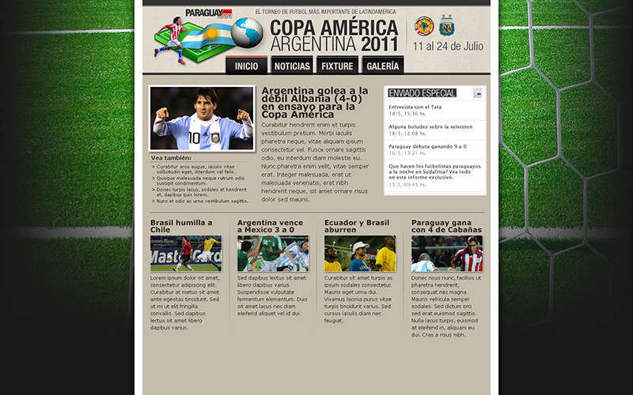
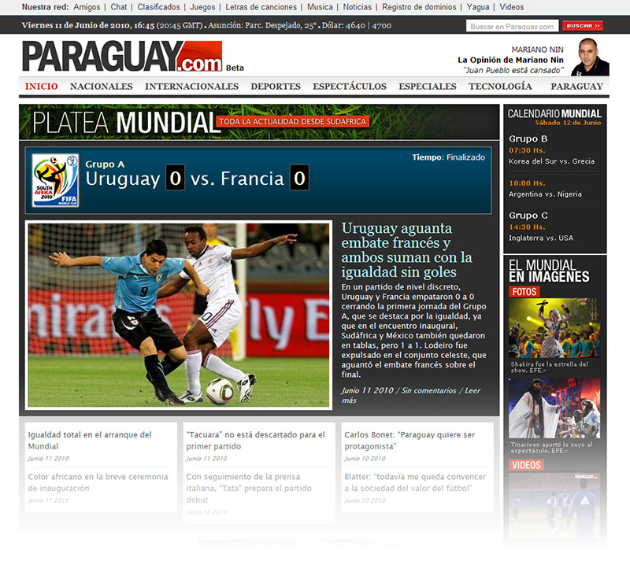

Diseño & HTML / CSS. Programación: Bruno Sacco, Omar Stumpfs.
Este fue el primer diseño que hice, respetando aproximadamente el mismo layout que tenía el template de Wordpress para no introducir tantos cambios de golpe. Este diseño no pasó de un mockup en Photoshop, hacía demasiado énfasis en las fotos y eso no era ideal considerando que la calidad de nuestras fotos era más bien inconsistente.
Esto se aproxima más a lo que terminó siendo el diseño final, incluyendo las distintas secciones, columnas, blogs, etc. De todos modos este diseño resultó ser un poco más complejo que lo que se estaba buscando, así que también quedó en el tintero.
Menos columnas, un layout más sencillo, más texto, esta fue la versión que se publicó. El area de arriba, con la noticia sobre Egipto, era opcional, sólo para noticias urgentes o de especial importancia (en la redacción se referían a esa sección como la sección "se murió Lugo". If only.) La versión actual del sitio (ahora es del grupo Vierci) utiliza una versión ligeramente modificada de este diseño.
Trabajar en un sitio de noticias es un desafío interesante. Siempre hay cosas nuevas que hacer, eventos ante los cuales reaccionar o para los cuales prepararse. Cada tanto un evento requería lo que en esencia terminaba siendo un mini-sitio propio, que funcionaba el tiempo que hiciera falta. Esto se hizo para las Elecciones Municipales del 2010.
Esto para la Copa América.
Esta adaptación del home para Sudafrica 2010.
Y así sucesivamente, para una larga y variada serie de eventos: los festejos por el Bicentenario, elecciones de lo que sea, noticias de máxima prioridad. De la misma manera, el sitio requería encabezados, o banners, o algún tipo de gráfico con bastante frecuencia. Estos son algunos de esos gráficos. Si algo se puede decir de trabajar en un sitio de noticias es que nunca es aburrido.